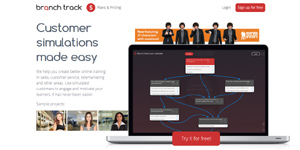
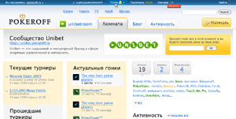
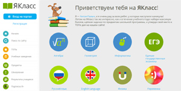
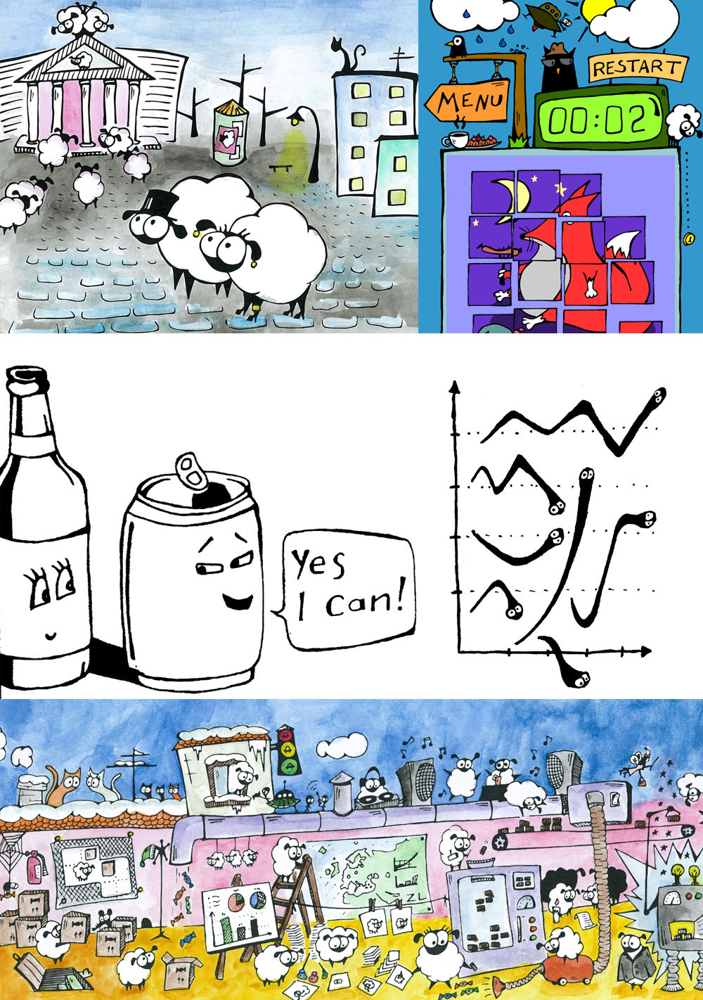

Zinoviy Lipinski
web development & management1. Facts
-
- 33 years old
- Latvian citizenship (EU)
- English, latvian and russian languages
-
16 years — total experience in IT
In different roles. From freelance coding to chief technical officer position. -
development skills
Excellent frontend + UI/UX Design + some backend.Strong knowlege of:
- HTML5/CSS3/JS
- XML/XSLT
-
PHP/MYSQL(not actual for me) -
Flash/ActionScript(not actual for me)
Good cooperation with:
- AngularJS, EmberJS, Yii, JQuery/JQueryMobile, Ajax, SASS/LESS, Bootstrap, MVC, BEM, SVN
- Mobile-first, Responsive Web, UI/UX, Agile, Scrum, Minimization, Data Safety, Quality Assurance, SEO Tools
-
profitable skills
SEO mechanisms. Knowledge about East European IT market and some about West European and Russian. A lot of contacts with development and marketing teams in East Europe (for cheap and high-quality production). -
8 years — project management experience
In different projects and companies, with a teams up to 30 members. Was responsible of design, development, marketing, content and support departments.The most interesting results

branchtrack.com
— e-learning service

pokeroff.ru (cyrillic)
— largest russian community about poker game

yaklass.ru (cyrillic)
— education service for secondary schools
-
multiskill
The last 6 years with a few exceptions, I've worked with people whose skill in IT objectively below mine. This is not good for professional growth. But these people were great professionals in other spheres — business, marketing, education, psychology. I learned their secrets and become multiskilled specialist based on IT solutions. -
common industries, was working for
- Mass media and social networks — 5 years
- Online education — 4 years
- Game development — 3 years
- Banking and ATM — 2 years
- Promotion and advertising in web — since 1996 :)
-
teacher
Nice ability to describe difficult things for everyone. Like programming or working with software interface. Author of «HTML for ladies» — the popular lectures about html-basics.
Various users manuals and instructions were always part of my job. -
drawing artist
In the beginning it was a hobby. But now my drawings often are requested for commercials and design.
2. Personality
I wish to describe myself briefly, like a marketing product.-
boring routine
I'm not afraid of. Because it is necessary part of working process. -
genius
Yes, it's a strange word. But about half-thousand people called me a genius. Seriously. -
mistakes
I have done mistakes in every project. It's a fact. -
personal responsibility
For everything in my projects or inside my working team. -
experience
I spent 16 years in business relationship with different people, companies, countries and technologies. With a lot of troubles, conflicts and losses. I solved all these problems.
3. Some references
-
Zinovy worked at INTEA learning technologies as Lead Developer. He worked directly under my supervision and I greatly enjoyed that time. Zinovy showed excellent ability to quickly learn new tech, skills and concepts. He is always takes interest in things beyond development, like user experience, interfaces and even content. He is dedicated to making a better product overall, which is invaluable, given his vast experience in web development. Our team learned a lot.
Sergey Snegirev
Managing Partner at INTEA learning technologies
-
Zinovy has joined our company in 2012 as designer with strong skills in Web user interface. Zinovy is capable to do the mockups and help IT team with coding html, css, js. During his work product has gained major improvements in navigation and look and feel.
Valery Nikitin
CEO yaklass.ru
4. Contacts
(english, latvian and russian languages)-
zinovijs@gmail.com
-
skype:
zinovylipinsky
-
current status:
unemployed
-
current location:
Berlin